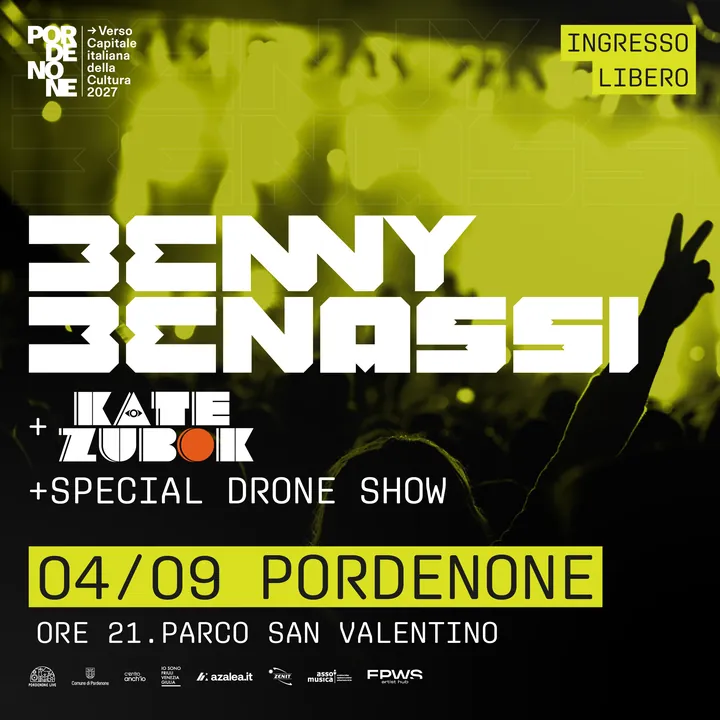

Friuli
ven 4 set · dalle 21:00
Benny Benassi e spettacolo di 800 droni
DJ set di Benny Benassi e spettacolo gratuito con 800 droni luminosi.
 Indicazioni
Indicazioni
- Costi e prenotazioni
- Ingresso gratuito · Nessuna prenotazione indicata
- Programma
- Confermato · recupero meteo previsto. In caso di maltempo il recupero è previsto sabato 5 settembre; controllare gli aggiornamenti del Comune prima di partire.
- In caso di maltempo
- In caso di maltempo il recupero è previsto sabato 5 settembre.
- Note
- In caso di maltempo, recupero sabato 5 settembre.
L’EVENTO
Descrizione completa
Ottocento droni luminosi raccontano nel cielo l’identità di Pordenone con immagini, musica e narrazione; a seguire è previsto il DJ set di Benny Benassi. L’appuntamento si svolge nell’area nord del Parco San Valentino.
Ingresso esclusivamente da Via Interna 2, accanto all’Auditorium Concordia. Non sono ammessi cani, sedie, sdraio, ombrelli, bastoni per selfie, treppiedi, vetro, lattine e borracce metalliche.
IL PROGRAMMA
Programma e orari
Appuntamenti raccolti dalle fonti elencate. Dove manca un orario, non è ancora disponibile in questa scheda.
Venerdì 4 settembre
- Dalle 21:00 · Drone show con 800 droni
- A seguire · DJ set di Benny Benassi
INFORMAZIONI UTILI
Prima di partire
- Ingresso esclusivamente da Via Interna 2, accanto all’Auditorium Concordia.
- Non sono ammessi cani, sedie, sdraio, ombrelli, bastoni per selfie, treppiedi, vetro, lattine e borracce metalliche.
ORGANIZZAZIONE